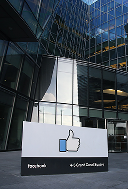

Акции компании Facebook
- О компании FACEBOOK Inc.
- Стоимость акций Facebook – реальная цена онлайн
- Основатели компании
- Карточка компании FACEBOOK
- IPO
- Почему выгодно купить акции компании FACEBOOK?
- Как купить акций FACEBOOK в CLIQ FX?
Что ещё стоит знать о выгодности покупки акций FACEBOOK?
- Дочерние компании Facebook Inc
- Дивиденды
- Динамика курса акций
- Аналитика акций Tesla
- Фиксация убытков
- Планы компании
О компании Facebook Inc.
Компания Facebook известна практически каждому жителю Земли, не говоря уже о трейдерах. Основание компании отмечено в 2004 году. Она относительно молодая и очень перспективная в сравнении с американскими компаниями. Создана Марком Цукербергом в Гарвардском институте, во время его обучения.
Статистика посещения сайта Facebook впечатляет. За месяц данный ресурс посещают около 2 млрд. человек. Суточная активность более 720 млн. Facebook.com входит В ТОП 5 сайтов по посещаемости в Мире. Мобильные приложения Facebook (Android/iOS) пользуются свыше чем на млрд. устройств. По статистике Марк Цукерберг стал самым молодым миллиардером планеты. Первый миллиард долларов он заработал в возрасте 23 года. В 2010 году известный журнал Forbes признал Марка самым молодым миллиардером с общим состоянием в 4 млрд. долларов.
Стоимость акций Facebook – реальная цена онлайн
График стоимости акций Facebook - отображает реальную и текущую цену акций на бирже NYSE
Купить Акции facebookОснователи компании
Основателями компании Facebook являются:
-
Марк Эллиот Цукерберг
(Mark Elliot Zuckerberg) -
Эдуардо Саверин
(Eduardo Saverin) -
Дастин Московиц
(Dustin Moskovitz) -
Крис Хьюз
(Chris Hughes)
Карточка компании Facebook
| Информационные и высокие технологии | |
| ОСНОВАНИЕ | 2004 год |
| ШТАБ-КВАРТИРА | Менло-Парк, Калифорния |
| ОСНОВАТЕЛЬ | Марк Цукерберг, Эдуардо Саверин, Дастин Московиц, Крис Хьюз |
| ОСНОВНЫЕ ТОРГОВЫЕ ПЛОЩАДКИ | NASDAQ |
| ТИКЕР | fb |
| ISIN КОД | US30303M1027 |
| Номинал | 0.000006 USD |
| КОЛИЧЕСТВО АКЦИЙ В ОБРАЩЕНИИ | 2 882 167 478 |
IPO
Датой активной деятельности компании Facebook можно считать 2004 год. Крупные инвесторы и даже крупный гигант Microsoft заинтересовались компанией Марка в 2007 году. В этом году компания Microsoft приобрела акций на сумму 240 млн долларов. Это составляло 1,6% всех акций. Спрос на акции превышал предложение в несколько раз, что позволило компании разместиться по верхним границам цены. Продажа акций производилась напрямую, т.к. aмериканские биржи не были задействованы на тот момент. Благодаря этому, капитализация компании составила 15 млрд. долларов.
18 мая 2012 года компания FACEBOOK вышла на биржу NASDAQ и акциям компании был присвоен тикер FB. Эмитент FB смог разместить акции по цене 38 USD за 1 акцию, при этом капитализация компании поднялась к 104 млрд. долларов. Хорошая реклама позволила компании провести успешное IPO.
Акции компании очень ликвидны и привлекают не только мелких инвесторов, но и крупных игроков. Дополнительной рекламой можно рассматривать добавление в индексы NASDAQ100 и другие. Эти индексы повышают привлекательность и спрос на акции, что в конечном итоге влияет на курс акций.
Почему выгодно купить акции Facebook?
Марк Цукерберг – как главный вдохновитель и создатель компании
Как главное лицо компании он уверен в своем будущем и в будущем компании в целом. У Марка много идей, которые он воплощает в жизнь с очень серьёзным козырем – это сетевой эффект, который заключается в ценности продукта, и он очень полезен и в огромном спросе для человека, и для группы людей. Например, он объединяет и помогает связываться с людьми в разных частях света, за считанные секунды. Каждый новичок сети, приводит в сеть своих друзей и знакомых, тем самым повышая траффик и полезность сети.
Информационная составляющая
По статистике, каждый пользователь проводит в среднем 18 минут в сутки и около 110 часов в год на ресурсе Facebook.com. Это позволяет компании анализировать поведенческий фактор пользователя, чтобы предложить лучшие условия по предоставлению рекламы. Если правительственные службы пытаются получить какую-то информацию о человеке, то у Facebook информации о человеке предостаточно. Это помогает компании зарабатывать ещё больше, т.к. компания знает, что нужно человеку и в каком пространстве он находится.
Рост и ещё раз рост
Спрос на социальные сети и услуги растут с каждым днём. У пользователей появляются новые методы связи, компания предлагает всё больше и больше услуг, что отражается на распространении и узнаваемости бренда во всём мире. Люди активно общаются между собой, проводят транзакции и покупают товары. Компания в свою очередь покупает новые проекты и стартапы.
Рыночная капитализация за 2017 год превысила свыше 500 млрд. долларов в год.
Основной упор был сделан на виртуальную реальность, искусственный интеллект и дополненную реальность.
Не забывайте об Instagram и WhatsApp Inc
Ещё никто не знает, как компания Facebook будет монетизировать WhatsApp Inc. Рекламы и рекламных баннеров там нет. А Instagram пользуется огромной популярностью. Соответственно эти проекты будут иметь огромную прибыль в перспективе.
Стоит компании начать монетизировать WhatsApp Inc. - доходы Facebook просто взлетят.
Таким образом инвестировать в компанию Facebook нужно прямо сейчас – это очень выгодное и перспективное дело. Компания-брокер CLIQ FX поможет Вам определить выгодное положение стоимости для наилучшего варианта покупки акций компании Facebook. Также стоит обратить внимание, что процесс покупки акций проводится только через брокеров.
Как купить акций FACEBOOK в CLIQ FX?
-
1. Для того, чтобы приобрести Акции компании Facebook, стоит произвести первичную регистрацию в брокерской компании CLIQ FX. Затем выбрать платёжную систему для пополнения депозита.
Сориентируем Вас: чтобы купить 3 акции Facebook (FB) на момент стоимости 180,41 USD за акцию с кредитным плечом 1:1 Вам необходимо минимум: 180.41*3=541,23 USD

-
2. Далее необходимо выбрать торговый счет с подходящими для Вас условиями и пополнить его, совершив перевод с балансового счета Wallet на Ваш торговый.

-
3. После пополнения торгового счёта, Вам необходимо будет скачать торговую платформу MT4 компании CLIQ FX. Перейдите в Личном Кабинете на «Главная» и выберите «Get MT4 Terminal».

-
4. После введите данные от торгового счёта, который Вы создали. В «Окно котировок» выбрать «Показать все символы» и найти тикер «FB».

-
5. После открытия тикера «FB» выберите «Открыть новый ордер» и впишите, то количество акций, которое Вам необходимо для инвестирования и нажмите «Buy».

-
6. И так, Вы купили 3 акции компании «FB»! Наши поздравления!
Что ещё стоит знать о выгодности покупки акций FACEBOOK?
Дочерние компании Facebook Inc.
C момента основания компании Facebook Inc и получения доходов, освободившиеся средства компания инвестировала в новые проекты, а также покупала существующие. Среди крупных приобретений компании – это Facebook Payments Inc., Atlas, Instagram LLC, Onavo, Oculus, WhatsApp Inc., Masquerade, CrowdTangle.
Давайте остановимся и разберём их подробнее.
Facebook Payments Inc. – платёжная система, которая продвигает интернет платежи в сети.
Atlas – рекламная контекстная сеть, которая призвана побороть монополию Google c её известной контекстной рекламой.
Instagram LLC – известная социальная сеть с использованием элементов обмена фотографий и видео сообщений.
Oculus – компания занимается производством небольших роликов с использованием технологий погружения в виртуальную реальность.
Onavo - израильская аналитическая компания. Компания предоставила аналитические продукты для мобильных приложений, собирая потребительские VPN-продукты компании Onavo Extend и Onavo Protect.
WhatsApp Inc. - представляет собой бесплатную и кроссплатформенную систему обмена мгновенными сообщениями и Voice over IP (VoIP).
CrowdTangle – компания занимающаяся анализом контента, в социальной сети Facebook.
Masquerade – которая занимается мобильными приложениями для работы с фото и видеофайлами.
Акционеры компании
Марк Цукерберг – является главным акционером своего детища - социальной сети. Он владеет 28% акций компании Facebook. Аналитики отрасли признают, что есть дополнительное соглашение между инвесторами, что Марк имеет право голосовать от имени других инвесторов.
Дастин Московиц – владеет около 7,5% процентами акций компании.
Mail.ru Group – российская интернет-компания имеет в своем активе 5,5% бумаг.
Accel Partners - американская венчурная компания, владеет в общей сложности 11,4% акций.
Питер Тиль - инвестор, управляющий хедж фондом, имеет в своем активе 2,5% акций.
Дивиденды
Компания FACEBOOK не выплачивает дивиденды. Менеджмент компании направляет всю прибыль в размере 100% на покупку новых активов для большего развития проекта в сети интернет. Аналитики не дают точных прогнозов, когда данный эмитент начнёт выплачивать дивиденды акционерам компании. Возможно в будущем менеджмент примет распределения дивидендов.
Курс стоимости ценных бумаг Facebook - онлайн
Купить Акции facebookДинамика курса акций
Во время первичного размещения на IPO курс акций поднимался до максимальной отметки в размере 38 USD за бумагу. После проведения первичного IPO курс акций начал резко снижаться и доходил до своего минимума в размере 20 USD за бумагу. Это было связано с тем, что на старте размещения бумаг инвесторы переоценили возможности компании. Но по мере падения курса стоимости акций, инвесторы стали активнее закупать. По мере роста фондового рынка США, стоимость курса акций растёт как на «дрожжах». Особенно тренд акций компании начал расти с небольшими коррекциями после 2013 года.
Аналитика акций Facebook
Торгуйте акциями крупнейшей социальной сети американского эмитента и извлекайте прибыль как в краткосрочной перспективе, так и в долгосрочной. Обращайте внимание на аналитику экспертов отрасли, на модели технического и графического анализа, это поможет Вам предугадать курс движения акций и заработать на этом. Нужно обращать внимание на квартальные отчёты компании Facebook, а также проводить анализ рынка социальных сетей.
В среднесрочной перспективе, кроме методов графического и технического анализа, нужно изучать рынок, который имеет отношение к социальным технологиям, следить за анализом развития сети, посещений. Внимательно следить за инсайдами, где могут происходить покупки и поглощения новых проектов и стартапов. В среднесрочной перспективе – это будет оказывать влияние на курс акций компании.
В долгосрочной перспективе aкции Facebook могут принести инвесторам очень хорошую прибыль.
Курс акций может перейти рубеж в 200 USD за бумагу.
Для этого финансовые отчёты компании должны стремительно показывать рост, увеличение аудитории и конечно же доходы от продажи рекламы. Крупные поглощения также будут сказываться на акции. Не стоит забывать о развитии тех проектов, которые Facebook уже приобрел.
Купить Акции facebook